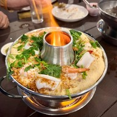
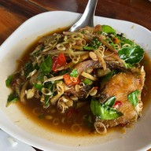

ร้านอาหาร ครัวท่าน้ำอ้อย
"ครัวท่าน้ำอ้อยเป็นร้านอาหารชื่อดังในจังหวัดนครสวรรค์
ตั้งอยู่ริมแม่น้ำเจ้าพระยา มีบรรยากาศสบาย ๆ และวิวสวยงามของแม่น้ำ
เหมาะสำหรับการพักผ่อนและทานอาหารไปพร้อมชมวิว
บรรยากาศร้านออกแบบให้รู้สึกถึงการอยู่ริมน้ำ
มีโต๊ะนั่งทั้งในร่มและกลางแจ้ง
เมนูเด่นของร้านคืออาหารไทยและอาหารทะเลสดใหม่ อาทิ ปลากะพงทอดน้ำปลา
กุ้งแม่น้ำเผา ปลาหมึกผัดไข่เค็ม และเมนูอื่น ๆ ที่เน้นรสชาติไทยแท้
หากคุณเป็นสายอาหารทะเลหรืออาหารไทย"
×